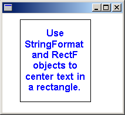
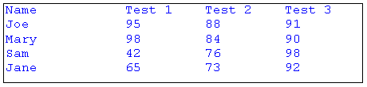
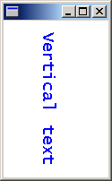

To apply special formatting to text, initialize a StringFormat object and pass the address of that object to the DrawString method of the Graphics class.
To draw formatted text in a rectangle, you need Graphics, FontFamily, Font, RectF, StringFormat, and Brush objects.
The following example draws text in a rectangle. Each line of text is centered (side to side), and the entire block of text is centered (top to bottom) in the rectangle.
WCHAR string[] =
L"Use StringFormat and RectF objects to center text in a rectangle.";
FontFamily fontFamily(L"Arial");
Font font(&fontFamily, 12, FontStyleBold, UnitPoint);
RectF rectF(30.0f, 10.0f, 120.0f, 140.0f);
StringFormat stringFormat;
SolidBrush solidBrush(Color(255, 0, 0, 255));
// Center-justify each line of text.
stringFormat.SetAlignment(StringAlignmentCenter);
// Center the block of text (top to bottom) in the rectangle.
stringFormat.SetLineAlignment(StringAlignmentCenter);
graphics.DrawString(string, -1, &font, rectF, &stringFormat, &solidBrush);
Pen pen(Color(255, 0, 0, 0));
graphics.DrawRectangle(&pen, rectF);
The following illustration shows the rectangle and the centered text.

The preceding code calls two methods of the StringFormat object: StringFormat::SetAlignment and StringFormat::SetLineAlignment. The call to StringFormat::SetAlignment specifies that each line of text is centered in the rectangle given by the third argument passed to the DrawString method. The call to StringFormat::SetLineAlignment specifies that the block of text is centered (top to bottom) in the rectangle.
The value StringAlignmentCenter is an element of the StringAlignment enumeration, which is declared in Gdiplusenums.h.
You can set tab stops for text by calling the StringFormat::SetTabStops method of a StringFormat object and then passing the address of that StringFormat object to the DrawString method of the Graphics class.
The following example sets tab stops at 150, 250, and 350. Then the code displays a tabbed list of names and test scores.
WCHAR string[150] =
L"Name\tTest 1\tTest 2\tTest 3\n";
StringCchCatW(string, 150, L"Joe\t95\t88\t91\n");
StringCchCatW(string, 150, L"Mary\t98\t84\t90\n");
StringCchCatW(string, 150, L"Sam\t42\t76\t98\n");
StringCchCatW(string, 150, L"Jane\t65\t73\t92\n");
FontFamily fontFamily(L"Courier New");
Font font(&fontFamily, 12, FontStyleRegular, UnitPoint);
RectF rectF(10.0f, 10.0f, 450.0f, 100.0f);
StringFormat stringFormat;
SolidBrush solidBrush(Color(255, 0, 0, 255));
REAL tabs[] = {150.0f, 100.0f, 100.0f};
stringFormat.SetTabStops(0.0f, 3, tabs);
graphics.DrawString(string, -1, &font, rectF, &stringFormat, &solidBrush);
Pen pen(Color(255, 0, 0, 0));
graphics.DrawRectangle(&pen, rectF);
The following illustration shows the tabbed text.

The preceding code passes three arguments to the StringFormat::SetTabStops method. The third argument is the address of an array containing the tab offsets. The second argument indicates that there are three offsets in that array. The first argument passed to StringFormat::SetTabStops is 0, which indicates that the first offset in the array is measured from position 0, the left edge of the bounding rectangle.
You can use a StringFormat object to specify that text be drawn vertically rather than horizontally.
The following example passes the value StringFormatFlagsDirectionVertical to the StringFormat::SetFormatFlags method of a StringFormat object. The address of that StringFormat object is passed to the DrawString method of the Graphics class. The value StringFormatFlagsDirectionVertical is an element of the StringFormatFlags enumeration, which is declared in Gdiplusenums.h.
WCHAR string[] = L"Vertical text";
FontFamily fontFamily(L"Lucida Console");
Font font(&fontFamily, 14, FontStyleRegular, UnitPoint);
PointF pointF(40.0f, 10.0f);
StringFormat stringFormat;
SolidBrush solidBrush(Color(255, 0, 0, 255));
stringFormat.SetFormatFlags(StringFormatFlagsDirectionVertical);
graphics.DrawString(string, -1, &font, pointF, &stringFormat, &solidBrush);
The following illustration shows the vertical text.

Â
Â